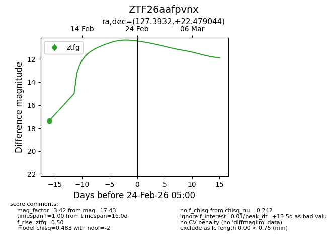
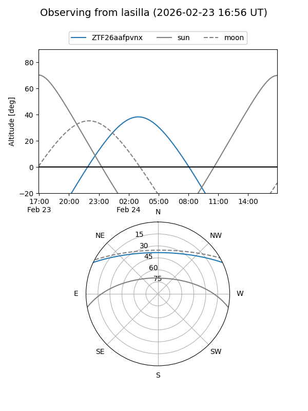
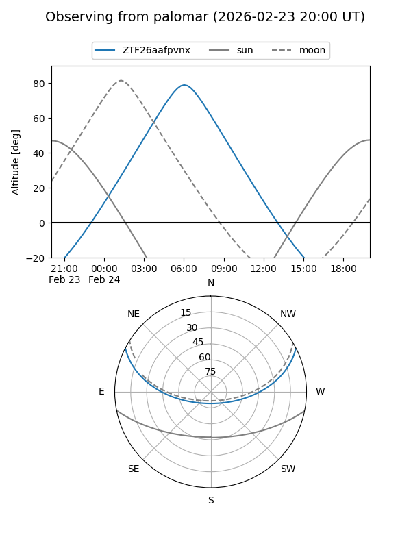

ZTF26aafpvnx
Target ZTF26aafpvnx at 2026-02-24 09:08
Aliases and brokers:
FINK: link
Lasair: link
ALeRCE: link
alt names
ZTF26aafpvnx (ztf,fink_ztf)
Coordinates:
equatorial (ra, dec) = 127.3932,+22.47904
equatorial (HMS+DMS) = 08:29:34.38,+22:28:44.56
galactic (l, b) = (201.8048,+31.05187)
Flags:
Photometry:
last ztfg=17.43
3 ztfg detections
Lightcurve

Visibility


Additional plots